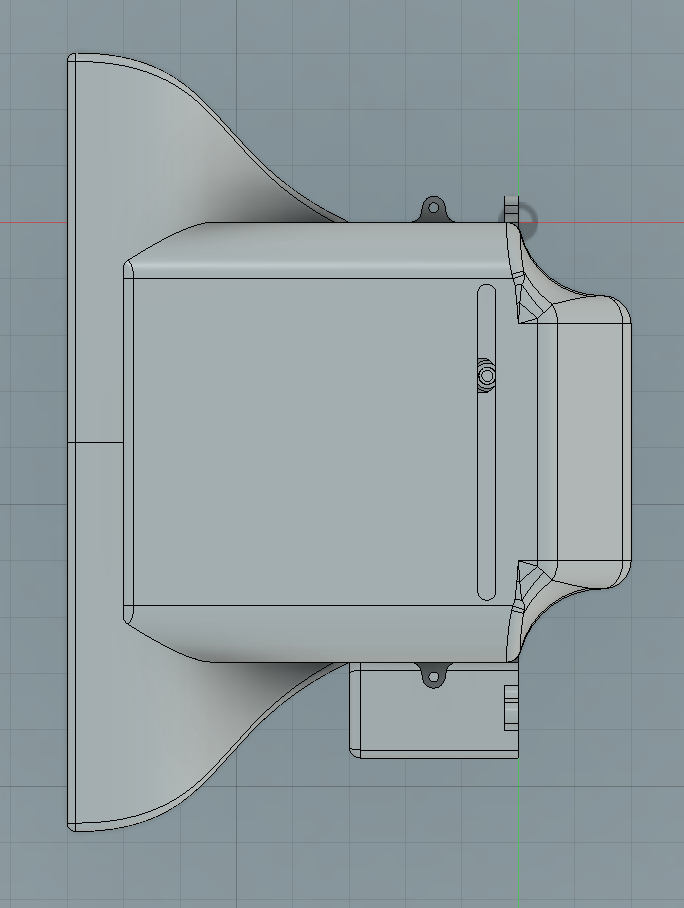
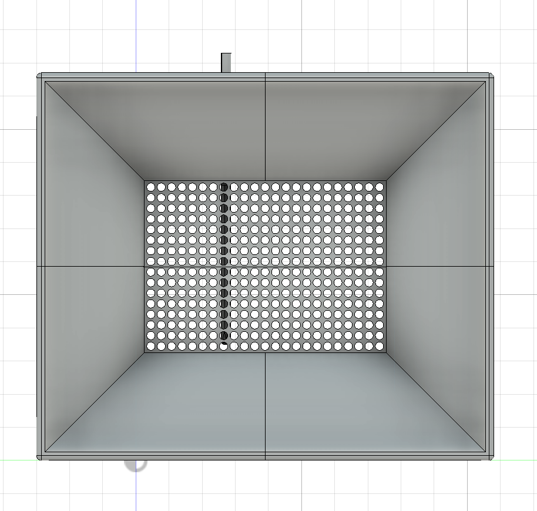
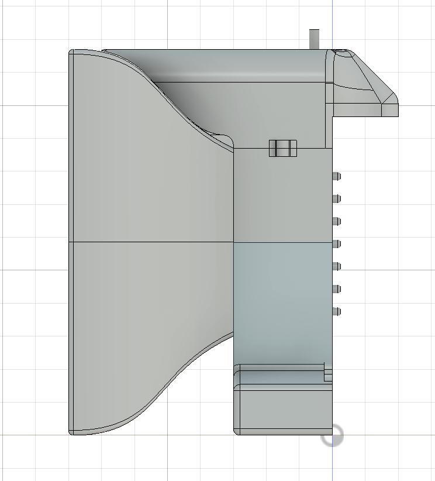
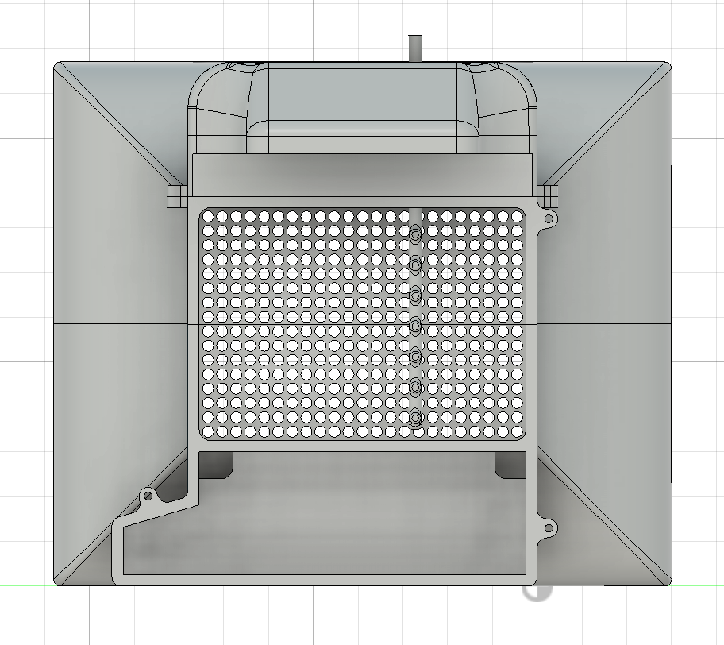
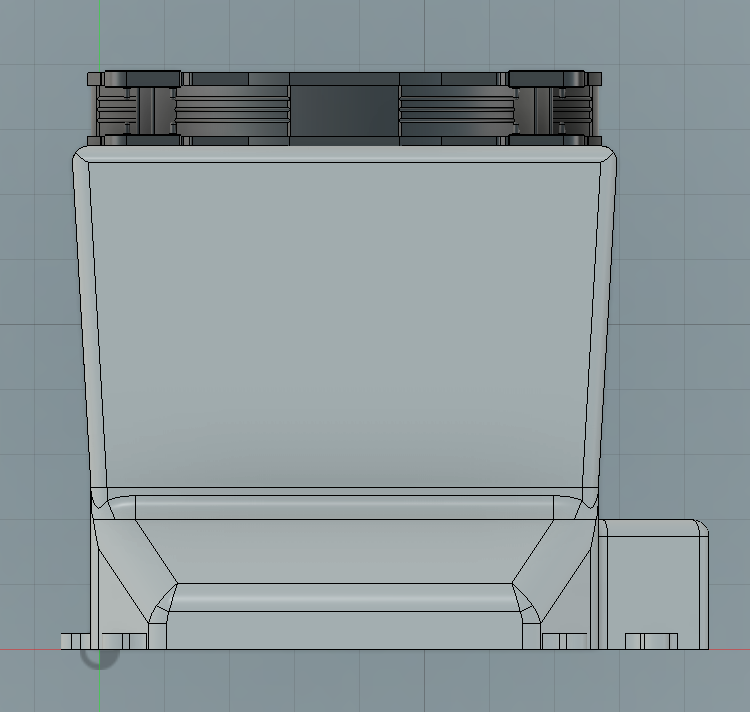
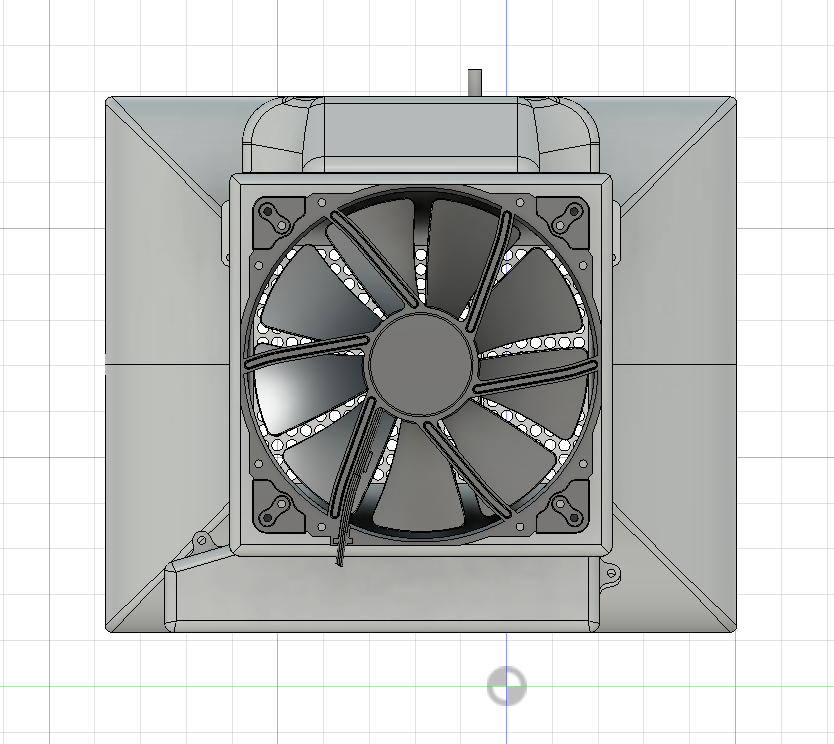
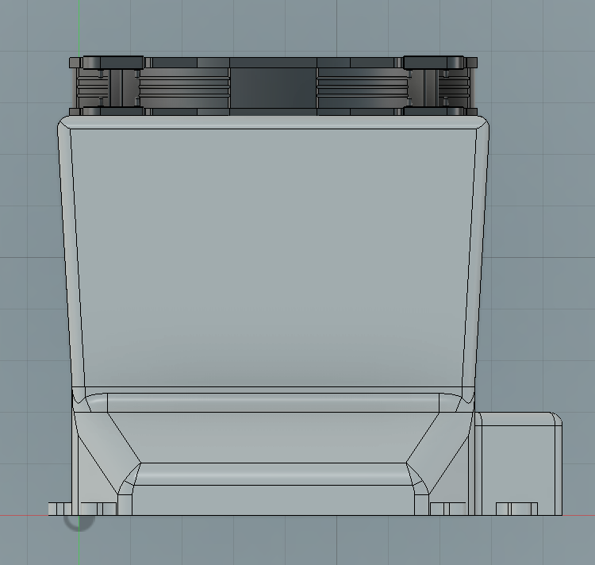
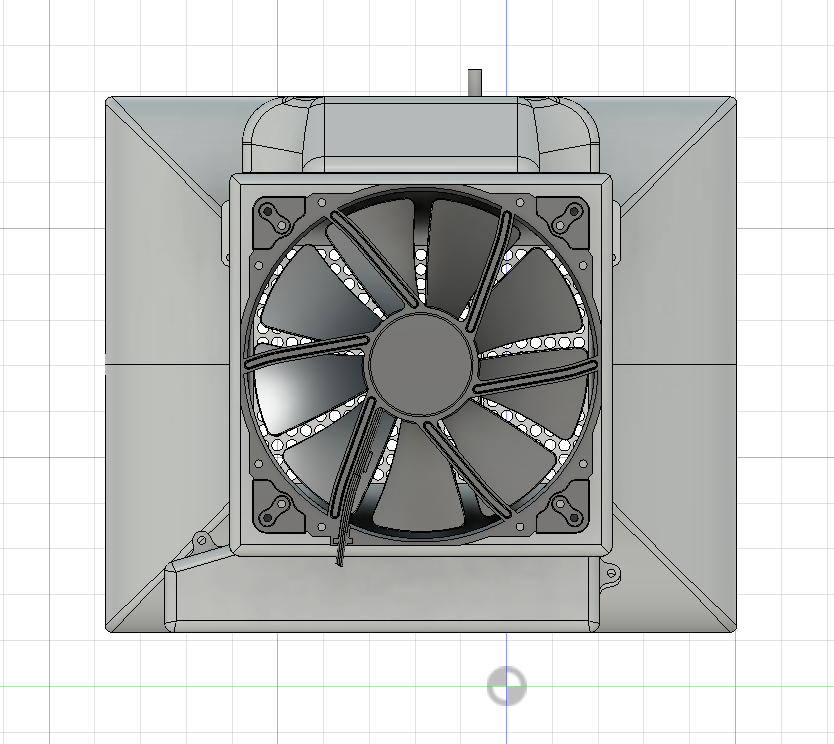

Contraction
The main design feature of this sub-assembly is a cone. Its purpose is to increase the speed of air entering the chambers. The area reduction from 143 to 35 square inches, in theory (Bernoulli's Principle), increases the velocity from 8.2938 m/s (fan pulling air) to 33.9 m/s (around 122 km/h)—a four-fold increase. Due to the relatively thin depth of the cone and a non-sealed system, the actual velocity increase could be much lower.
A 1-inch-thick round honeycomb was added as a second layer of the subsystem. Its purpose is to make the air entering the chamber laminate (flow smoothly), allowing for better analysis of how aerodynamic parts affect airflow.





 


